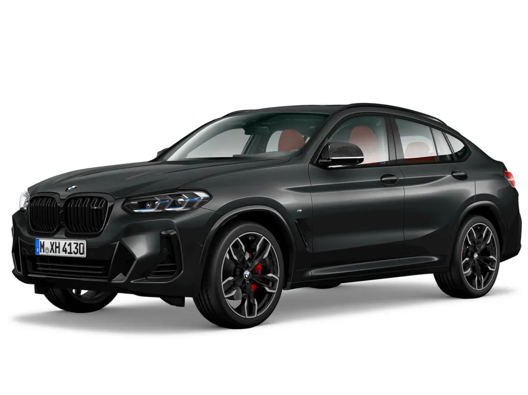
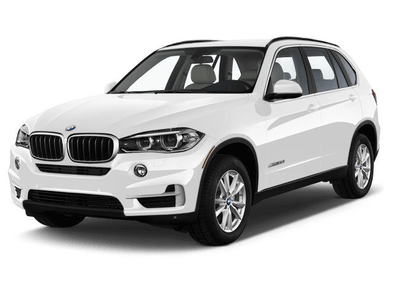
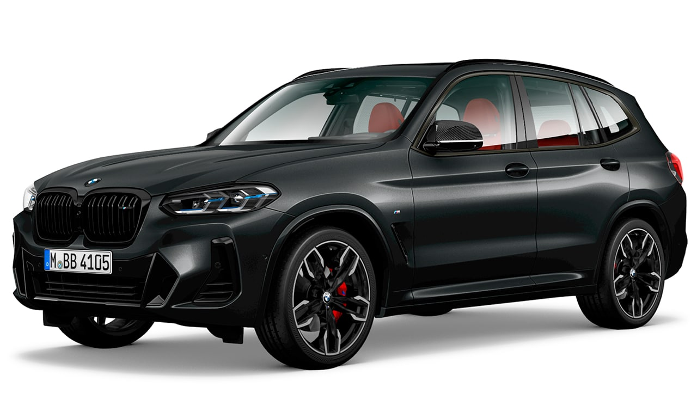
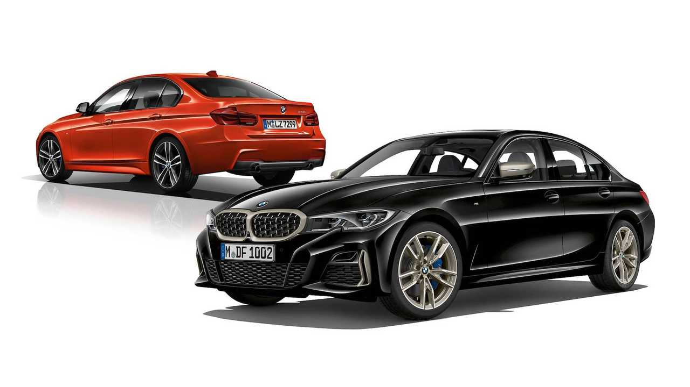

| Modelo | Preço |
| BMW X1 | Versão intermediária (X-Line): Aproximadamente R$ 363.950 |
| BMW Serie 3(320 i) | Versão M Sport: Aproximadamente R$ 389.950 |
| BMW X3 | Versão 30 xDrive M Sport: A partir de R$ 515.950 |
| BMW X5 | Versão xDrive50e X-Line: A partir de R$ 786.950 |
| BMW X4 | aproximadamente R$ 458.950 |
| Modelo | Especificações |
| BMW X1 | SUV familiar com motor 2.0 turbo de 204 cv, tração dianteira e visual aventureiro com detalhes em alumínio. |
| BMW Serie 3(320 i) | Sedã esportivo com motor 2.0 turbo de 184 cv, tração traseira e acabamento interno premium com som Harman Kardon. |
| BMW X3 | SUV médio com motor 2.0 turbo de 252 cv, tração integral e amplo espaço interno. |
| BMW X5 | SUV grande híbrido plug-in com 489 cv combinados, tração integral e autonomia elétrica de até 79 km (PBEV). |
| BMW X4 | SUV Cupê com motor 2.0 turbo de 252 cv, tração integral xDrive e design traseiro fastback agressivo. |